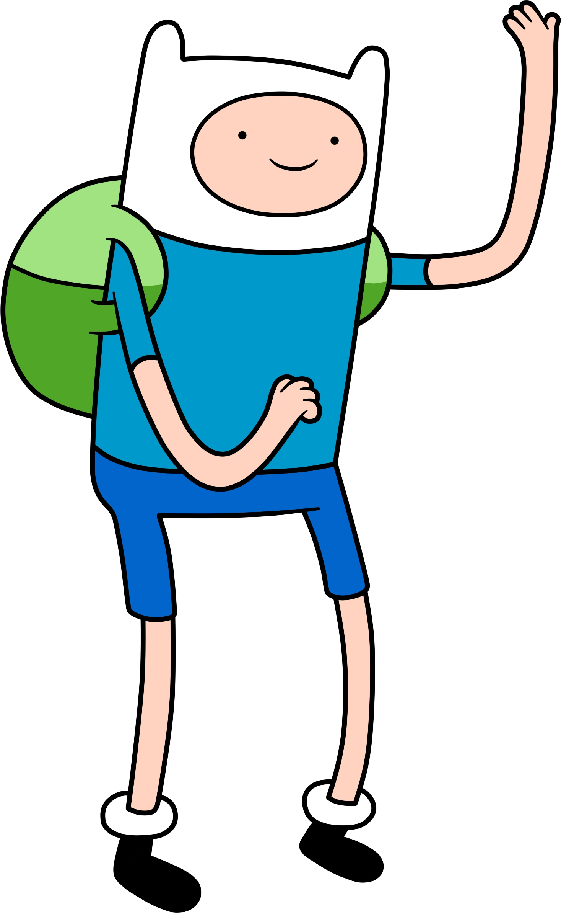
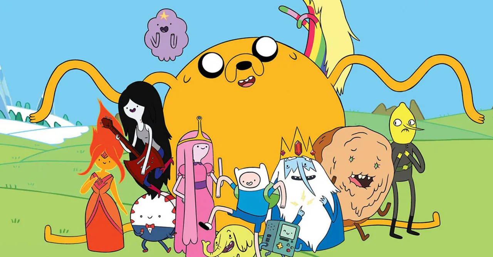
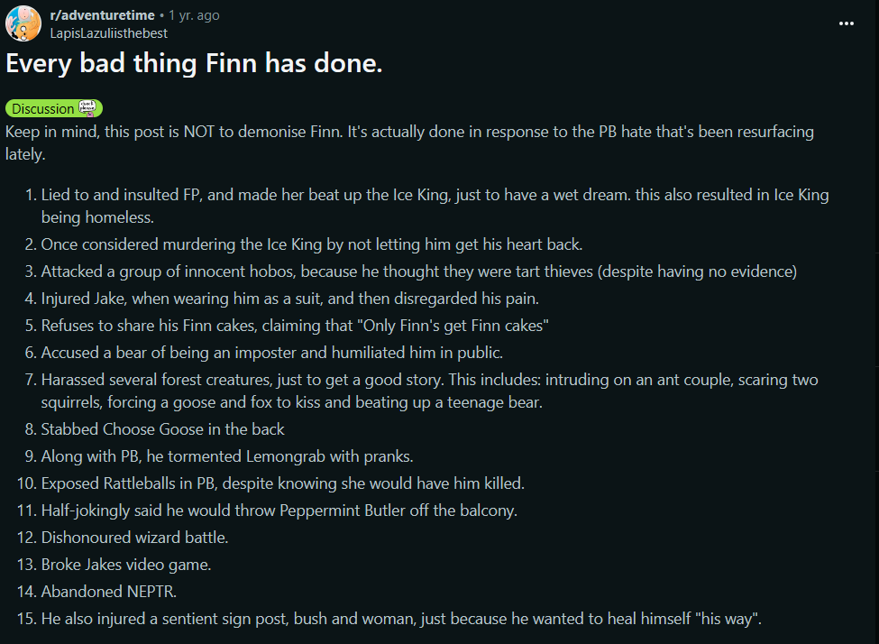

Finn's Character Development
Finn from Adventure Time
Background
Before the story of Adventure Time, there was the Mushroom War which took place around the year 2000. This was nuclear warfare that destroyed the planet, causing many different animal mutations. The episodes take place around the year 3,000. Finn is one of the only humans left on earth, and the other characters are monsters as a result of mutations from radiation. I chose to analyze Adventure Time because of the deeper message surrounding nuclear warfare. I chose to focus on Finn specifically because of his improvements as a character throughout the show.
Rhetorical Strategies
Finn is the main character of the story, while Jake the Dog is his sidekick. Finn's actions display his heroic mindset, as well as other important traits that evolve over time. Finn starts off being naive in early episodes. An example of this is when he attacked a group of innocent people, assuming that they were thieves. This action has heroic intent, but it was a bad action because of Finn being so naive. I found a list of some bad things Finn has done, it is below.
Identity
Finn's actions do relate to identity as well. He has moments where he questions what it means to be human. He also has realizations that he has flaws, and this adds to his identity as an honest hero. Because of Finn's character development, it is easiest to understand the episodes when watched in chronological order.
Considering Different Perspectives
Finn has committed a few bad actions. If taken out of context, people may interpret that he is just a bad person. I do not think this is true, as he often regrets his bad actions. He usually tries to act heroic, but it can backfire because of how naive he is.